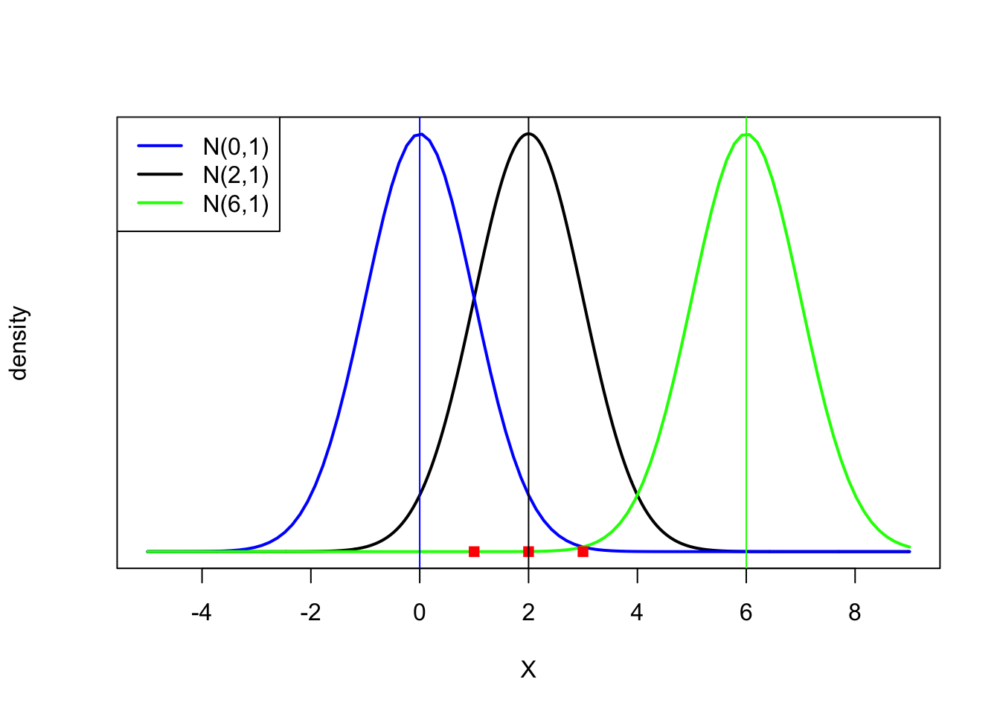

Suppose you have three data points \(x = (1, 2, 3)\) and you believe that they are generated from a normal distribution with unknown mean \(\mu\) and standard deviation equal to 1, i.e., \(N(\mu,1)\).
Given these data points you have, what is the most likely value of\(\mu\)?
This is the question that the method of maximum likelihood estimation is designed to answer.
Suppose the researcher considers three possible values of \(\mu = (0, 2, 6)\) as likely candidates. Which one of these values are most likely for the data observed?
The figure above plots three normal distribution probability (density) functions for \(N(0,1)\), \(N(2,1)\), and \(N(6,1)\), respectively in blue, black, and green. That is, they are respectively \(f(X \mid \mu=0)\), \(f(X \mid \mu=2)\), \(f(X \mid \mu=6)\), where:
The red square dots at the bottom indicate \(x=(1, 2, 3)\), which are the observed data points.
It is obvious from the above plots that the data points \(x\) is most likely to have generated from \(N(2,1)\). They are quite unlikely from \(N(0,1)\), and even more so from \(N(6,1)\). Hence, we can say that the value of \(\mu = 2\) is associated with the highest likelihood or compatibility with \(x=(1, 2, 3)\).
If we consider all other possible values of μ, and convinced that 2 is most likely to have generated x, then it is the maximum likelihood estimate for μ.
Let us define some mathematical details:
\(f(X1,X2,X3 \mid \mu)\): joint probability density function of \(X\), given \(\mu\). It shows the probability density of \(X\), given the value of \(\mu\).
\(L(\mu \mid x1,x2,x3)\): likelihood function of \(\mu\), given $x4. It shows the likelihood of \(\mu\), given the observed data \(x=(x1, x2, x3)\).
The difference is that the density function is indexed by random variable \(X\), given a value of parameter such as \(\mu\); while the likelihood function is indexed by the parameter, given the observed data \(x\).
The two functions are related as
\(L(\mu \mid x1,x2,x3) = k f(x1,x2,x3 \mid \mu)\),
where \(k > 0\) is any constant. Let us assume that \(k = 1\) for simplicity. Then the two functions are almost the same, with the difference being their arguments and the conditioning values. If we assume for simplicity that \(X\)’s are independent, then we can write (since the joint probability is a product of individual probabilities under independence)
The above table shows the values of the likelihood function \(L(\mu \mid x1,x2,x3)\) when \(x=(1, 2, 3)\): the values listed in the last column as a product of those in the first three. The highest likelihood value achieved is at \(\mu = 2\).
Now we consider all possible values of \(\mu\), and plot the likelihood and log-of-likelihood functions as a function of \(\mu\). The log-of-likelihood function is defined as
where log() is the natural logarithmic function. The log-of-likelihood is a monotonic transformation of the likelihood function. It is widely used because it is analytically tractable, being additive and linear.
The functions are plotted as above. It is clear from the above plots that the likelihood or log-of-likelihood is maximized at \(\mu = 2\), which is the maximum likelihood estimate for \(x = (1, 2, 3)\).
Analytically, it can be shown that the sample mean is the maximum likelihood estimator for a sample generated independently from \(N(\mu,1)\), and the sample mean of \(x = (1, 2, 3)\) is indeed 2.
The maximum likelihood estimation method is widely used for many models with non-linearity. This post is aimed to provide an intuitive explanation of the method without introducing the analytical details.
R code for the calculations and plots are as below:
x =c(1,2,3) # Data observedX=seq(-5,9,0.01) # X rangepar(mfrow=c(1,1))# plot density functionsplot(X,dnorm(X, mean=2, sd=1), type ="l",col="black", lwd=2, add=TRUE, yaxt="n",ylab="density")curve(dnorm(x, mean=0, sd=1), type ="l", col="blue",lwd=2, add=TRUE, yaxt="n")curve(dnorm(x, mean=6, sd=1), type ="l", col="green" , lwd=2, add=TRUE, yaxt="n")# points for data Xpoints(x,c(0,0,0),col="red",pch=15)legend("topleft", legend=c("N(0,1)", "N(2,1)","N(6,1)"),col=c("blue", "black","green"), lty=1,cex=1,lwd=2)abline(v=c(0,2,6),col=c("blue","black","green"))

# Calculation of Likelihood vales at different mean valuesprod(dnorm(x,mean=0,sd=1))
[1] 0.0000579
prod(dnorm(x,mean=2,sd=1))
[1] 0.02336
prod(dnorm(x,mean=6,sd=1))
[1] 0.0000000000008818
# Plotting likelihood and log-of-likelihood m=seq(-4,8,0.1)m1=rep(0,length(m))m2=rep(0,length(m))for(i in1:length(m)) {# Likelihood m1[i]=prod(dnorm(x,mean=m[i],sd=1))# log-of-Likelihood m2[i]=sum(log(dnorm(x,mean=m[i],sd=1)))}# plottingpar(mfrow=c(1,2))# Likelihoodplot(m,m1,type="l",ylab="L(mu|X)",xlab ="mu",lwd=2)abline(v=2,col="red")# Log-of-Likelihoodplot(m,m2,type="l",ylab="log of L(mu|X)",xlab ="mu",lwd=2)abline(v=2,col="red")